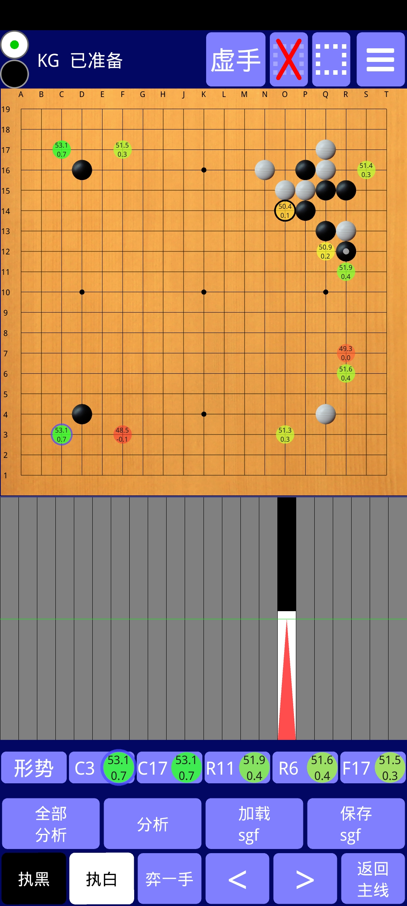

此应用使得你可以与俩个非常强的围棋 AI 进行对弈，也可以用他们来分析:
1) KataGo: 据我所知本应用是第一个 KataGo 的安卓单机实现。内置（扩展训练的最后一个）10b网络和（来自KG1.5.0的）20b网络，也可以从设备存储加载其他网络。10b网络运行在CPU上。20b网络专为安卓进行了优化，如果可能也会使用硬件加速。
2) LeelaZero: 内置（与40b自我对弈网络进行了对抗训练的）15b网络和（LZ第287号）40b网络，也可以从设备存储加载其他网络。这俩网络都专为安卓进行了优化，如果可能也会使用硬件加速。速度相当快。
计算速度（每秒模拟对局数）的一些例子：
| 神经网络 | 天玑9200+ | 骁龙8+gen1 | 麒麟9000 | 骁龙888 | 天玑9000 | 天玑8100 | 天玑1100 | 骁龙778 | 骁龙768 | 骁龙855+ |
|---|---|---|---|---|---|---|---|---|---|---|
| KG 20b | 720 | 580 | 500 | 330 | 280 | 240 | 130 | 120 | 80 | 55 |
| LZ 15b | 1000 | 200 | ||||||||
| LZ 40b | 420 | 280 | 50 |
本应用可从 谷歌应用商店下载，或者从 Github 下载：64位点这里 （请在手机的设置里允许安装第三方来源的应用），如果64位的不兼容，试试32位，下载后安装即可使用。

界面修改自 Alexander Taylor 的杰出应用“LazyBaduk”（感谢他友好的许可）。界面的操作绝大多数不言自明，但一些提示也许很有帮助：
左上角两个圆圈指示当前该谁落子，可以点击改变。（如果还未产生手顺的话）
点击绿圆可以显示隐藏 AI 的分析。
点击虚线框弹出一个对话框，可以开关局部分析模式、设置限制在局部的分析深度、填写局部外的若干可用点的坐标。对话框设置完成后在棋盘上框选一个局部。
右上角是设置按钮，你可以切换神经网络、引擎，调整对局设置。
设置菜单里显示了当前使用的网络的名称，如果引擎是LeelaZero，就在第一行，如果引擎是KataGo，则在第二行，点击弹出一个对话框，可管理网络：你可以删除你不想用的内置的网络（以节省存储空间），也可以从设备存储加载网络。对于KataGo，标准的或优化的网络都可以这么加载；对于LeelaZero，则只能加载优化的网络。加载优化的网络（总是包含两个文件）时，两个文件分别加载（这是必要的，因为最新版本的安卓不授予BadukAI访问两个文件的权限。你可以在这里找到优化的网络。特别地，最近的 KataGo 优化网络有：
点击“编辑设置”打开一个对话框，可设置 AI 引擎的参数。绝大在多数参数将直接传递给 AI，参数的含义请在相应围棋 AI 的项目文档里找。关于“使用特定NPU加速器”选项，默认时，BadukAI 将选择合理的值，但不保证，所以你可以试试找找最快的值，请确保手机芯片上有NPU.
如果当前使用的是 KataGo，设置里的“等级”将可用：输入"30"至"-8"的整数（表示30级至9段（网棋）），经过强度大致校准的机器人（就像 KaTrain 中一样）将成为 AI 选手（而不是 KataGo 完全体）。这些弱化的机器人完全归功于 sanderland 出色的 KaTrain 项目的基础算法。必须用20b或15b的网络，校准的强度才准确。算法所限，4段以上强度增加不多，所以"-8"实际上比9段弱得多。选择“开局库”，AI 选手将使用人类的布局。
如果输入的不是30至-8的整数，AI 选手将是 KataGo 完全体。无论输入什么，分析(“回合分析”或“全部分析”)永远都是完全体。
选项“对弈时胜率”，可以切换对弈过程中是否显示胜率（而不仅仅是在分析中）。如果勾选，将显示所有 AI 回合的胜率（上面提到的校准机器人不计算胜率，所以不显示，落后太多时也不会认输）。
在“直方图”中，有三种图可选：
点击“分析时选点显示数”，可以设置分析时显示在棋盘上的选点的个数。
下拉框“单色”可以切换到“单色围棋”模式：所有的棋子都是相同的颜色（下拉框里选择的那个颜色）。这是训练（棋形）记忆的有趣办法。由于这个设置只对新下的棋子起作用，所以如果想从单色模式回到双色模式，首先将下拉框“单色”置为“-”，接着跳转到开局（点击直方图左起第一个柱），再跳转到终局（点击直方图右起第一个柱）。这么做会强迫 BadukAI 重下一遍所有棋子，新的设置就能起作用，所有棋子都恢复了颜色。
点击“管理时间设置”，可以对自己和 AI 的思考时间进行约束：AI 按照“秒/手”弈棋。在“分析时每手总模拟对局数”中输入正数，则分析时每手进行这么多的计算。否则每手消耗“秒/手”中指定的秒数。在“回合分析时限（秒）”中输入正数，AI 会在回合分析这么多时间后会停止。否则会一直分析下去直到再次点击“回合分析”。
如果你按住棋盘不松手，将显示落子的预览。滑动手指来调整落子位置（位于手指上方 3 行）。抬起手指表示落子。可以在设置中关闭 3 行偏移。
您可以用两指平移、放缩、旋转棋盘（每次90度）。
棋盘下方的区域显示了一个胜率直方图。直方图的柱数与对弈或加载棋谱的手数相同。点击一个柱，可以导航到相应的着手（盘面）。当前盘面由红色三角形指明。如果 AI 对盘面进行了分析，则灰色的柱变为黑白相间，黑白的长短表示胜率大小。
直方图总是显示一条分支的胜率（只是应用界面没地方显示所有分支的胜率）。如果您加载了 sgf（通过加载按钮或从另一个应用程序分享到 BadukAI 的 sgf 棋谱文件），将显示棋谱的主分支。然后，如果您自己或者让 AI 行棋，添加了变化分支，直方图将显示从开局到分支变化最后一手的胜率。要跳转至分支变化的前一手并返回棋谱的主分支，请点击“返回主线”。
即使只显示一个分支的胜率直方图，按钮“保存 sgf”将保存所有的分支。
当 AI 分析一个盘面时，最佳选点（至多十个）会按照质量顺序出现在胜率直方图下方。点击可在棋盘上查看最佳选点的后续变化。其中第一个按钮“形势”，表示 AI 对棋盘各点所有权的预测。
点击“回合分析”，AI 将分析当前盘面：胜率、目差、最佳着法及其后续变化信息将不断更新，直到您再次点击“回合分析”才会停止。在管理时间设置中的“回合分析时限（秒）”中输入正数，到时间后回合分析会暂停（直到盘面被改变时继续）。
点击“全部分析”，AI 将从当前盘面到终局一着一手地分析（每次分析受限于设置中的“秒/手”或“分析时每手总模拟对局数”）。之后，直方图将显示所有胜率，以便您可以观察到胜率的突然变化（这暗示着恶手），然后仔细审视相应盘面。
点击“<”、“>”、“下一分支”和“返回主线”，可以遍历游戏树。“下一分支”不是更改盘面，而是跳转到游戏树的另一个分支上，跳转后可以用“>”遍历该分支。分支跳转是循环的，如果已在最后一个分支上，再点击“下一分支”会回到第一个分支，即主分支上。无论何时，“返回主线”都将回到主分支上。
如果你加载的sgf只有摆设的棋子（也就是没有先后次序的棋子）,第二行的导航按钮就没用了，因此，它们就变成了编辑按钮：点击“添加黑子”，可以在棋盘上添加任意数量的黑棋子（添加操作和对弈时一样）。同理可添加白棋子。点击“移除棋子”，可以像添加棋子一样在棋盘上添加叉号。把叉号放到棋盘已有的棋子上，棋子就被移除了。
无论哪个编辑按钮，再次点击就能结束编辑。此时就可以像平常一样对弈了。
要玩让子棋，就像如上所述那样编辑，接着点击左上角的白圆圈，切换成白棋的回合，然后点击“执白”，让AI弈白棋。
点击“加载sgf”之后，不仅可以加载 sgf 文件，也可以加载包含部分或完整棋盘的图片。 BadukAI 将识别图中的棋盘棋子，然后将识别结果展示为一个盘面。为使一切顺利，必须向 BadukAI 陈述一些信息，具体来说：
你应该陈述如下信息：
有两种操作次序：
通过图片加载盘面后，可以点击“显示图片”来比较图片和盘面。棋子将显示为红色。因此，可以更易发觉识别错误并通过“添加白子”、“添加黑子”、“移除棋子”来更正。
对于 KataGo，你可以
对于 LeelaZero，你可以
如果您遇到任何问题，请告诉我...
我的邮件地址：Andreas Kirmse